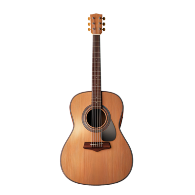
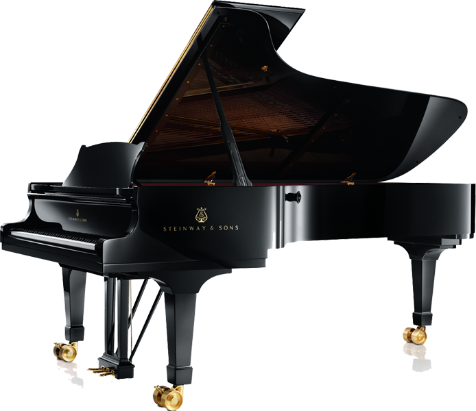
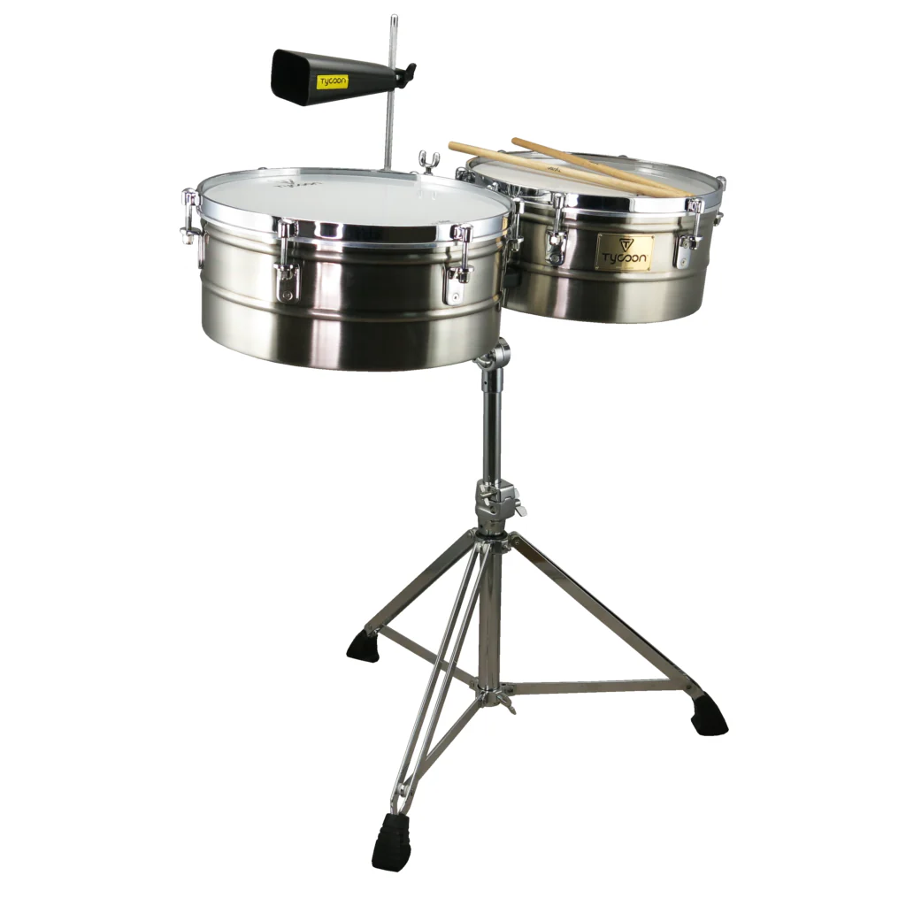
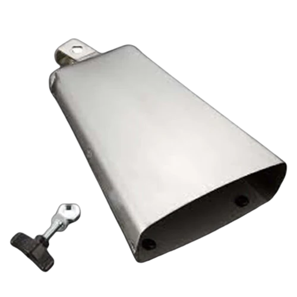
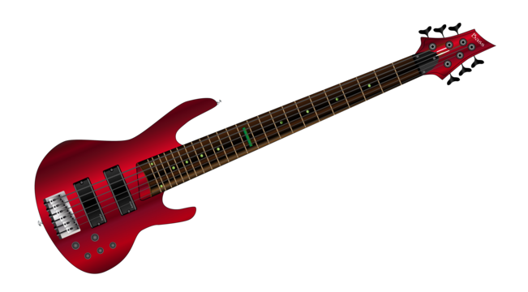
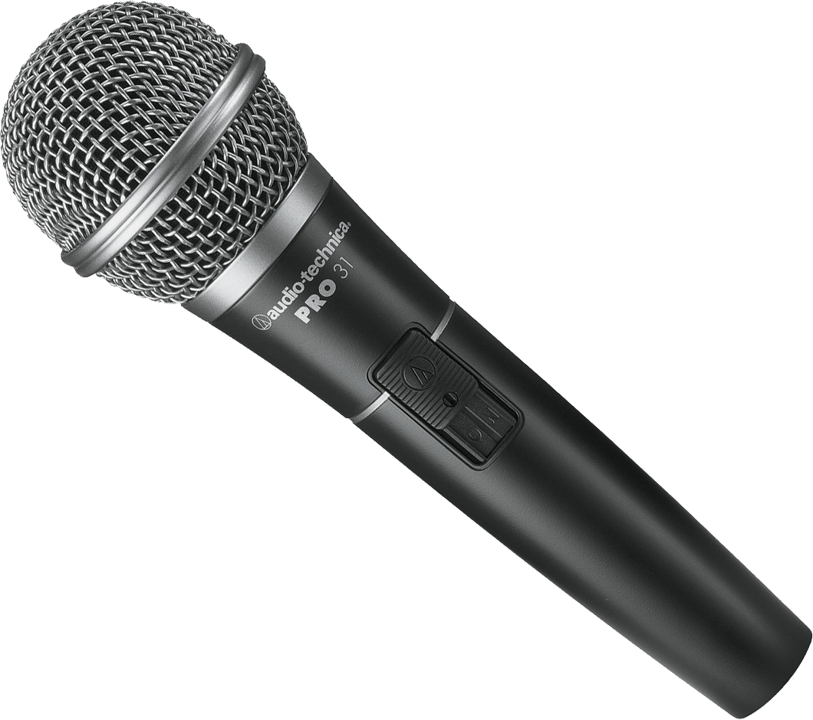
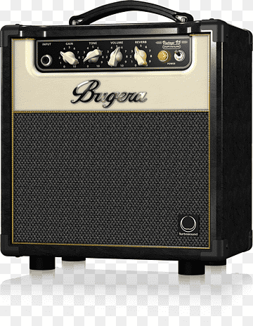
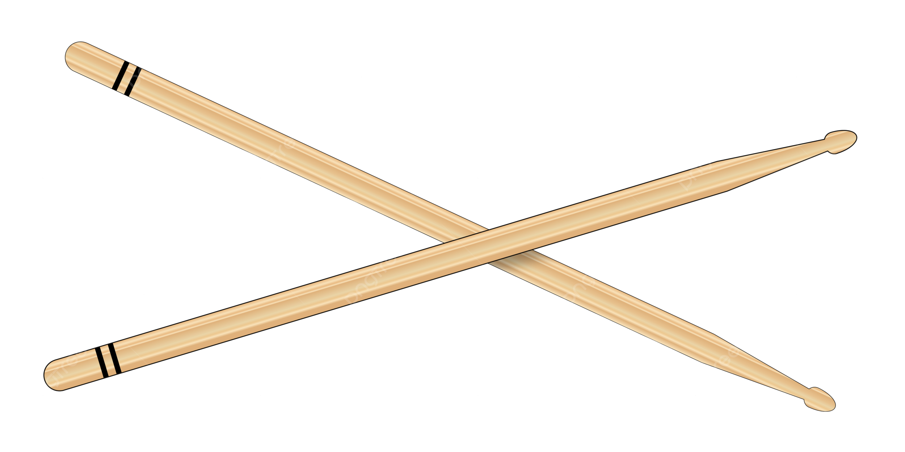
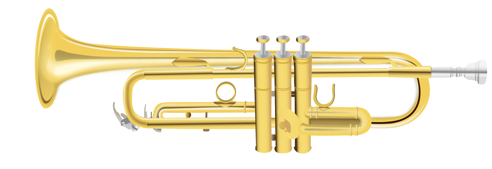

Guitarra Acústica
Descubre el sonido clásico y cálido de nuestra guitarra acústica de madera natural. Ideal tanto para principiantes como para músicos avanzados, esta guitarra ofrece un tono resonante y una excelente proyección. Fabricada con una tapa de abeto, aros y fondo de caoba, y un mástil ergonómico, garantiza comodidad y durabilidad. Perfecta para sesiones de práctica en solitario o para acompañar en jam sessions. ¡Haz música con estilo y calidad!
Más información

Batería Electrónica
La batería electrónica ofrece una experiencia de percusión digital avanzada con una variedad de sonidos y configuraciones. Perfecta para practicar en casa sin molestar a los vecinos gracias a su salida para auriculares. Incluye múltiples pads sensibles al tacto, pedales de bombo y charles, y una estructura robusta y ajustable. ¡Transforma tus sesiones de práctica con tecnología de última generación!
Más información

Piano Digital
El piano digital combina un diseño moderno con la auténtica sensación de un piano acústico. Equipado con teclas ponderadas y un rango de tonos ricos y expresivos, es ideal para estudiantes y profesionales. Incluye funciones adicionales como metrónomo integrado, modos de aprendizaje y conectividad MIDI para una experiencia completa. ¡Eleva tu música con un instrumento versátil y elegante!
Más información

Timbales
Los timbales ofrecen una resonancia vibrante y una proyección clara, perfectos para añadir ritmo y energía a cualquier actuación. Fabricados con materiales de alta calidad, estos timbales son duraderos y adecuados tanto para principiantes como para músicos experimentados. ¡Añade un toque profesional a tu kit de percusión!
Más información

Cencerros
Los cencerros proporcionan un sonido distintivo y nítido, ideal para géneros como el rock y la música latina. Con un diseño robusto y fácil de montar, estos cencerros son una excelente adición a cualquier set de batería o percusión. ¡Enriquece tu música con tonos claros y resonantes!
Más información

Bajo
El bajo eléctrico ofrece un sonido profundo y potente, esencial para cualquier banda. Con su mástil cómodo y pastillas de alta calidad, proporciona un tono versátil adecuado para diversos estilos musicales. Perfecto para bajistas de todos los niveles que buscan un instrumento confiable y expresivo.
Más información

Micrófono
El micrófono de alta fidelidad captura tu voz con claridad y precisión, ideal para grabaciones y actuaciones en vivo. Con su diseño ergonómico y duradero, es adecuado para cantantes, podcasters y presentadores. ¡Lleva tu voz al siguiente nivel con tecnología de punta!
Más información

Amplificador
El amplificador de guitarra ofrece una potencia impresionante y una amplia gama de efectos para personalizar tu sonido. Compacto y portátil, es perfecto para prácticas en casa, estudios y pequeñas presentaciones. ¡Amplifica tu música con calidad y versatilidad!
Más información

Baquetas
Las baquetas están diseñadas para ofrecer equilibrio y durabilidad, adecuadas para bateristas de todos los niveles. Disponibles en varios tamaños y materiales, proporcionan una respuesta táctil excelente y un control preciso. ¡Encuentra el par perfecto para tu estilo de tocar!
Más información

Trompeta
La trompeta ofrece un tono brillante y resonante, ideal para solistas y músicos de banda. Construida con materiales de alta calidad y un diseño ergonómico, garantiza comodidad y durabilidad. Perfecta para estudiantes y profesionales que buscan un sonido excelente y una proyección poderosa.
Más información